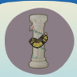
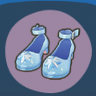
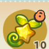
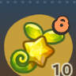
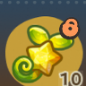

首页 / 绵朵莉
绵朵莉
你好，我是绵朵莉，喜欢设计各种奇奇怪怪的玩偶，所以正在四处找灵感。
生日
7月5日
喜爱
杂草 眠月睡袍 番竹多彩绘 毛绒天空玩偶 云朵小饼干好感
玩偶、蓝色、白色、连衣裙、鲜花
反感
金属、海洋生物
亲密度等级奖励
| 等级 | 类型 | 奖励 |
|---|---|---|
| 1 | 点头之交 | 交换联络方式：可在星湾查看友邻相关信息 |
| 2 | 点头之交 | 随心会面：可在星湾邀请友邻来访 |
| 3 | 同频友伴 | 邀请入住：可邀请友邻入住 |
| 4 | 同频友伴 | 日常合影：可与友邻一起合影 |
| 5 | 同频友伴 | 推荐穿搭：可为友邻推荐服饰穿搭 |
| 6 | 心之牵绊 | 米友家装：可通过米友家装帮助友邻装修 |
| 7 | 心之牵绊 | 邀约同行：可邀约友邻同行陪伴 |
| 8 | 灵魂羁绊 | 专属称号：可获得友邻专属称号 |
历程
- 结伴而行：累计与绵朵莉星海旅行3次
- 携手共进：累计与绵朵莉星海旅行20次
- 同心协力：累计与绵朵莉星海旅行50次
- 一见如故：累计主动与绵朵莉闲聊10次
- 无话不谈：累计主动与绵朵莉闲聊30次
- 相谈甚欢：累计主动与绵朵莉闲聊50次
- 倾心而谈：累计主动与绵朵莉闲聊100次
- 心有灵犀：累计主动与绵朵莉闲聊150次
- 毛绒暖意：累计从绵朵莉处兑换3个玩偶
- 蓬松松心意：累计从绵朵莉处兑换20个玩偶
- 美好玩偶回忆：累计从绵朵莉处兑换50个玩偶
- 乐于助人：累计完成绵朵莉的友邻事件2次
- 无微不至：累计完成绵朵莉的友邻事件20次
- 全心全意：累计完成绵朵莉的友邻事件50次
- 略表心意：累计赠送绵朵莉礼物2次
- 锦上添花：累计赠送绵朵莉礼物20次
- 称心如意：累计赠送绵朵莉礼物50次
友邻印象
普通季卡奖励


季卡选购奖励



第 9 格（季卡选购）
交换日记
| 类型 | 标题 | 日记 |
|---|---|---|
| 纪念日 | 蓬~松松，入住！ | 蓬~松松，收拾好啦！今天是正式入住喵星的第一天。这里的草地，很清新~。 为我和我的玩偶们都打扫出了蓬~松松的家。 |
| 温暖陪伴 | 与千万次回忆相遇 | 在种星人的眼中，关于这个星球的美好回忆是什咩样子的？有了种星人的帮助，我将这个星球的美好瞬间，也咩成了玩偶。 虽然……我创作玩偶的时候，可能和平时不太一样？不过，如果因此，能够和种星人一起，遇见更多美好回忆的瞬间，似乎也不错。 |
| 温暖陪伴 | 住进了云朵般毛~绒绒的家 | 今天，种星人帮我把房子，按照图纸，扩建成了毛绒小屋。新的小屋，和我想象中一样，有着和天空一样毛绒绒的屋顶，也可以放下很大的玩偶了。 真好。 |
| 温暖陪伴 | 牢记：防止静电！ | 特别记录：不能再因为赶工，在进货时购入会产生静电的化纤材料了！记住咩！记住咩！记住咩！ 好在，有种星人在，帮我解除了静电的烦恼…… 也因为种星人，即便被看到了被静电的样子，也并不觉得尴尬，反而，还受到了帮助……是安心的感觉。 |
| 温暖陪伴 | 玩偶捉迷藏，发现点睛之笔！ | 今天，有两件特别值得记录的事。 一件是，在玩偶捉迷藏中，找到了两个特别定制的玩偶。 另一件是，用美好回忆，为新的玩偶，设计出了「点睛之笔」。 这两件事，都有种星人的陪伴，这是不是意味着…… 下一次，我应该想一想，用和种星人的美好回忆，咩一个什么样的玩偶？ |
| 温暖陪伴 | 漂流玩偶的旅行 | 亲手把玩偶们放入星海去旅行，心里还有着一丝伤感呐。 不过，想到这些玩偶们，在星海里，将会遇见更多的人，与更多人产生新的、美好回忆，是更有意义的事。 谢谢种星人，在种星人的帮助下，我找到了内心真正想做的事。 我将坚定地记录在这里： 绵朵莉，我，将为更多人带去美好的、专属回忆的玩偶。 这是我的初心，也是……我的决定！ 如今，与种星人的美好回忆，似乎越来越多了…… 你，会记得咩？ |
本页为《星布谷地》玩家图鉴资料页，内容整理自玩家资料站与游戏内数据，仅供参考；游戏版本更新后数据可能滞后。
站点由 GitHub Pages 静态托管 · 与游戏官方及 B 站 WIKI 无隶属关系 · 游戏素材版权归原权方所有。